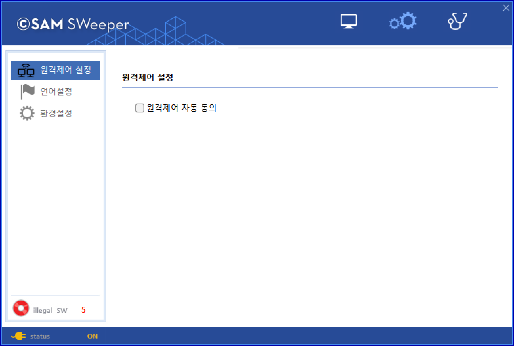

11-3-2-1. 원격제어 설정
11-3-2-1. 원격제어 설정
Source: https://www.sweeper.or.kr/etc/manual/11-3-2-1.html
11-3-2-1. 원격제어 설정
11. CLIENT UI(AGENT) ›› 11-3. 사용자 UI ›› 11-3-2. 설정 ››


원격제어 설정
'원격제어 자동 동의'에 체크를 하게 되면 관리자가 사용자의 동의없이 원격 연결이 가능합니다.

참고사항
Mac Agent는 현재 원격제어를 지원하지 않습니다.
© Copyright SWeeper Inc.. All Rights Reserved